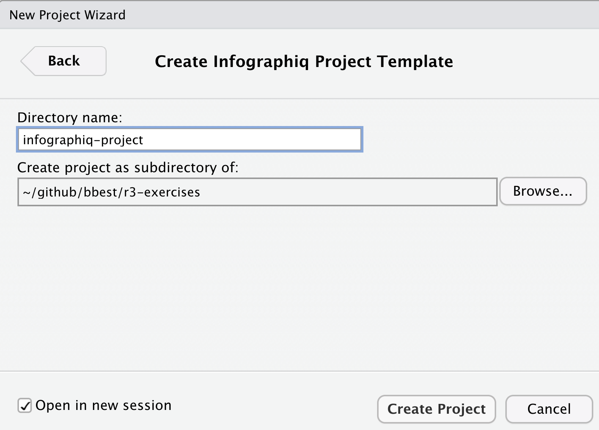
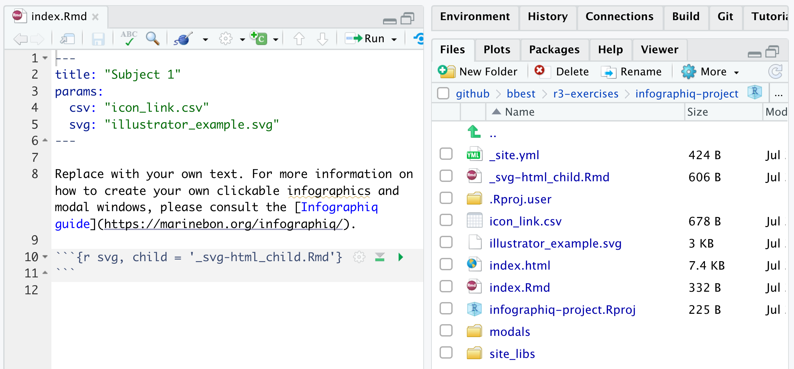
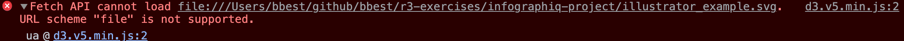

6 Infographics
Learning Objectives
Use a custom infographiq Javascript library to intelligently link icons of ecosystem elements to pop-up windows containing data figures, which could be static images or interactive visualizations.
6.1 Install software
6.1.1 InkScape
InkScape is a design tool that is excellent at editing SVG files, which is also its native storage format. It is similar to Adobe Illustrator, except free. Please download it at inkscape.org/release.
(The current version 1.1 for MacOS is 118 MB, so it may take some time to download depending on your connection speed.)
6.1.2 infographiqR
In order to use the infographiq template, you will need to install the following infographiqR R package:
remotes::install_github("marinebon/infographiqR")Please close and restart all instances of RStudio before proceeding in order to load the infographiqR template project option.
6.2 Create infographiq project
Please open RStudio by double-clicking on your r3-exercises.Rproj file to set your working directory. In the menu File -> New Project…, New Directory, then Infographiq Project Template:

If you don’t see this option, then you presumably need to install infographiqR AND restart RStudio per the previous step.
Then: 1) specify a directory like infographiq-project inside your r3-exercises folder; and 2) tick Open in a new session; before clicking Create Project:

RStudio should open to a new session with the Source and Files panes looking like so:

6.2.1 Notice Report techniques of index.Rmd
Do you notice two Report techniques in index.Rmd that we discussed last week?
Parameters
paramsin the frontmatter to specify the infographic’s two key inputs: 1)svgof the scalable vector graphic illustration; and 2)csvtable matching the icon with the modal window content to open.Child chunk is used to render the
svg. Open_svg-html_child.Rmdto see the parameters used inline with HTML code (which is valid markdown) to load the needed JavaScript then run the maininfographiqJSlink_svg()function.
The combination of both techniques above allows multiple Rmds to use the same _svg-html_child.Rmd and specify different params for rendering different illustrations altogether.
6.2.2 Knit the index
Knit the index. You should see in the Viewer pane the rendered document.

The icons demonstrate different functionality…
6.2.3 View with local web server
Within the top of the Viewer pane, you can normally click the icon Show in new window  to open the knitted web page into a full browser window, but when you try this you’ll get the unsatisfying result that the imagery disappears. This is because the reading of local files is not supported by
to open the knitted web page into a full browser window, but when you try this you’ll get the unsatisfying result that the imagery disappears. This is because the reading of local files is not supported by d3’s fetch() function used to read the SVG, which is visible for instance if you open Google Chrome browser’s View -> Developer -> JavaScript Console:

Per the d3 guru Mike Bostock in this issue, we need a web server to load these files in a standard browser. Thankfully we can easily do this with the servr package. Be sure to specify the same directory as where you created the infographiq-project, which if you are working from that project after ticking Open in a new session in previous step should be ".", i.e. the current working directory.
shelf(servr) # load package; install if needed
getwd() # check working directory
httd(dir = ".") # run web server, aka http daemon
servr::httd() # one-liner to run web serverRStudio should again open the index.html (i.e. the default web page for a folder) in your Viewer pane, but now you can click the icon Show in new window  to see it correctly in a full size web browser. The locally served web address for me is
to see it correctly in a full size web browser. The locally served web address for me is http://127.0.0.1:4321/ but might be different for you.
Open the files
6.3 Link to a modal with image
Let’s start editing this infographiq template website by replacing the red circle with a thermometer icon and have it open a static figure of temperature indicator over time as the indicator.
Start by opening a File Explorer (on Windows; or Finder on Mac) by going to RStudio’s File pane and clicking the gear icon More -> Show Folder in New Window:

This should open File Explorer on Windows or Finder on Mac to your infographics. This may help you open files (try right-clicking to select the preferred application).
6.3.1 Create modals/sst.html
Let’s create a simple web page with an image using Rmarkdown by going to File -> New File -> Rmarkdown… . File -> Save to modals/sst.Rmd and overwrite the entirety of the file with the following contents:
---
pagetitle: "SST"
output: html_document
---
](https://raw.githubusercontent.com/NOAA-EDAB/ecodata/master/docs/LTL_MAB_files/figure-html/long-term-sst-1.png)Knit this file to see the simple web page with an image. Next, let’s add a suitable icon to the illustration and link the modal content with this page.
6.3.2 Add temperature.svg icon
When I google “thermometer icon filetype:svg” and click Images (direct link), I like the second thermometer, which is usable under Creative Commons License, so please download this file. I save id to my infographiq-project/icons/asdf.

Now open the inkscape_example.svg in Inkscape. (I right-clicked on the file and in Mac used the Open With menu.) Then delete the red circle. Then drag and drop the thermometer svg file onto the Inkscape Canvas. Use the
https://marinebon.org/infographiq/image-creation.html#inkscape_XML
6.4 Link icon to modal with table (.csv)
Setup the thermometer to link to the modals/sst.html by swapping out icon = chartexample4 with the following last line of this table:
| svg | icon | title | link | section | not_modal |
|---|---|---|---|---|---|
| inkscape_example.svg | chartexample1 | Google Charts Example | modals/modal_google_charts.html | Category 1 | F |
| inkscape_example.svg | chartexample2 | Google Charts Example with Trend Bar | modals/modal_google_charts2.html | Category 1 | F |
| inkscape_example.svg | chartexample3 | Highcharts Example | modals/modal_highcharts.html | Category 1 | F |
| inkscape_example.svg | thermometer | SST | modals/sst.html | Category 2 | F |
Further Resources
- Infographiq guide: online manual
- Infographiq manuscript: aka “Webenized Condition Report”, submitted to NOAA Sanctuary Conservation Series on 2021-07-09